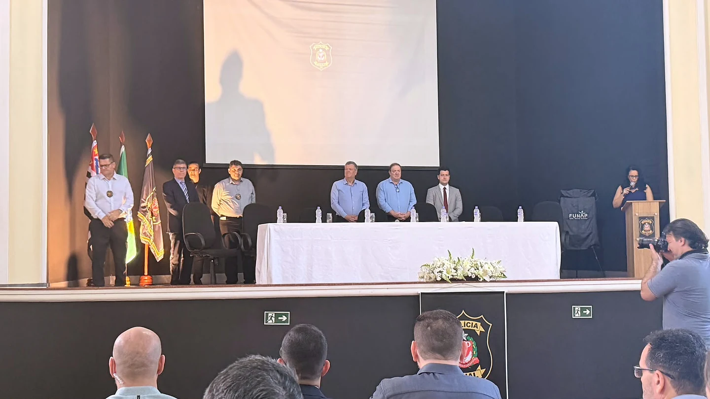
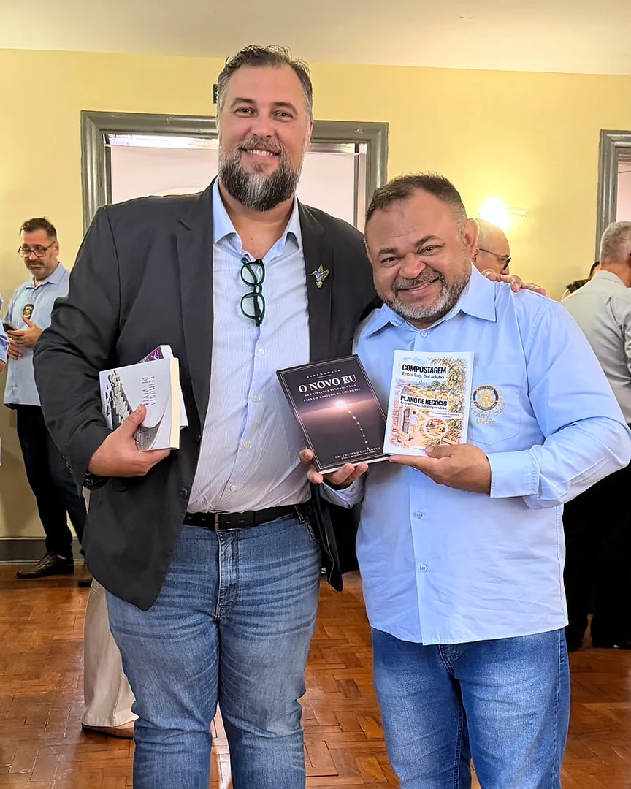
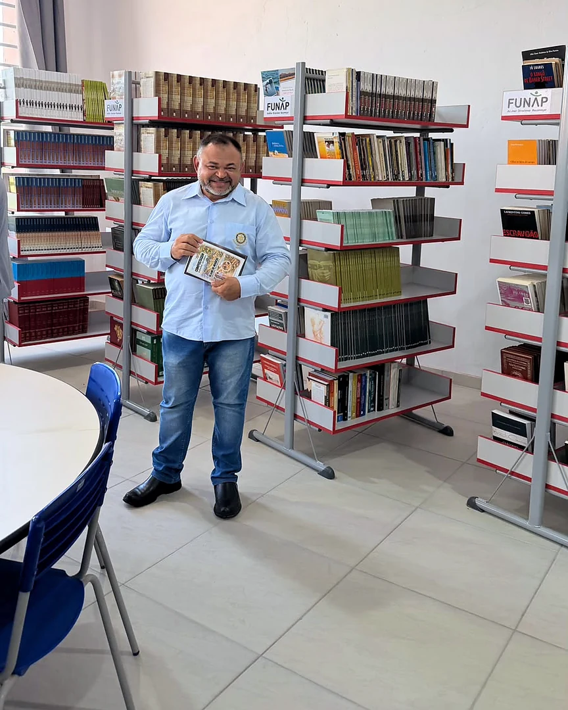
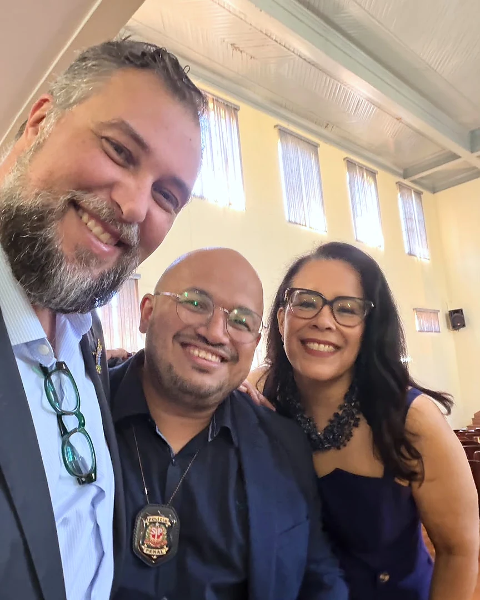
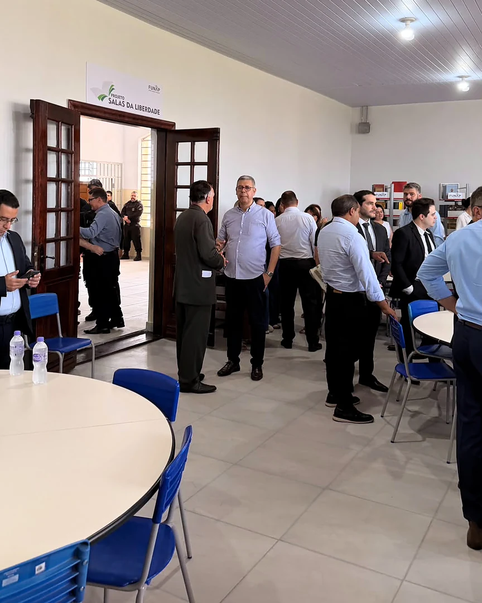
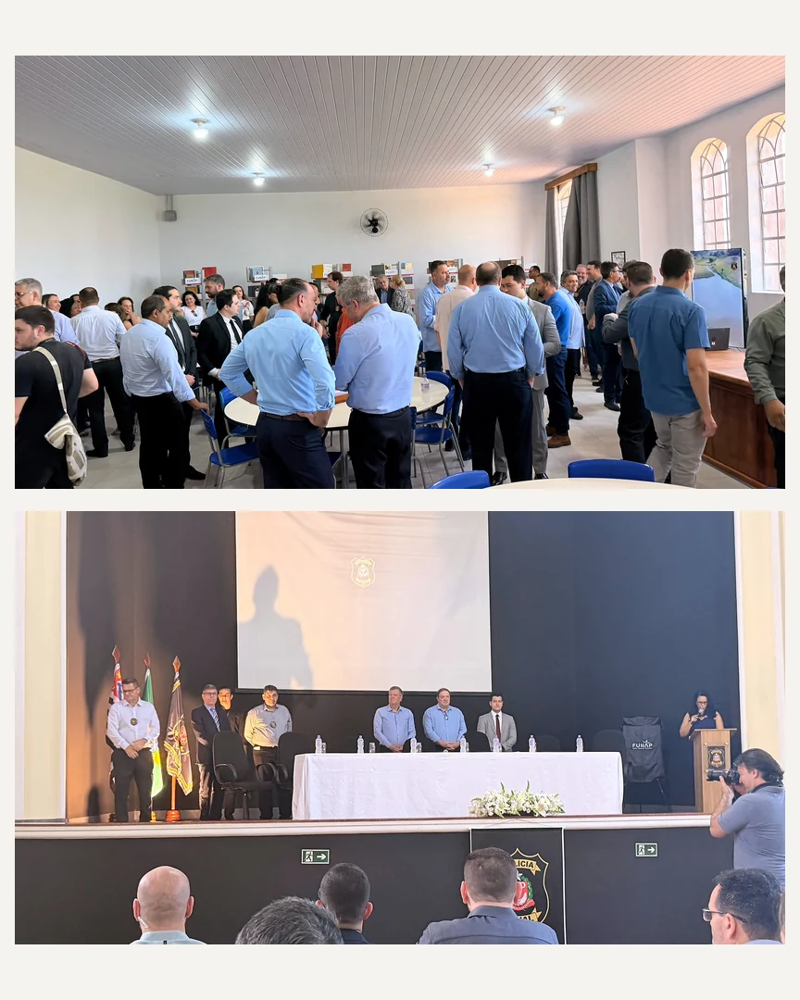
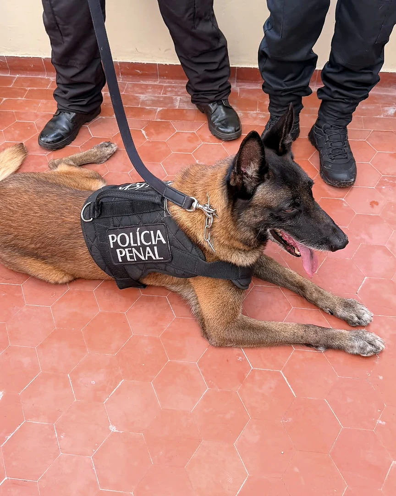

Em 4 de novembro de 2026, a entrega da 100ª Sala da Liberdade, no Centro de Progressão Penitenciária III “Prof. Noé Azevedo”, em Bauru, reuniu profissionais e parceiros em torno do acesso à leitura no sistema prisional. Eduardo Casarotto, autor e pesquisador, participou da cerimônia representando o Instituto Humanar.
Instalada no antigo Instituto Penal Agrícola, uma unidade histórica de Bauru, a biblioteca foi reformada e equipada pela FUNAP. A entrega do espaço, com livros e mobiliário, marcou a chegada à centésima sala do projeto e foi celebrada como uma conquista da Fundação e da Secretaria da Administração Penitenciária do Estado de São Paulo (SAP).
Uma biblioteca para aproximar pessoas e conhecimento
O trabalho de incentivo à leitura da FUNAP articula acesso ao acervo e atividades de leitura livre e dirigida. Conforme a apresentação institucional do Lendo a Liberdade, a iniciativa inclui salas de leitura e momentos de discussão e reflexão sobre as obras. A entrega de uma biblioteca equipada oferece uma base concreta para que esse encontro com os livros tenha espaço na rotina da unidade.
Na visão do Humanar, aproximar as pessoas do conhecimento é uma forma de ampliar sua participação na vida coletiva. Uma biblioteca oferece materiais para estudar, conhecer outras experiências e encontrar palavras para elaborar a própria história. Seu valor está também nas possibilidades de conversa, reflexão e convivência que o acesso à leitura pode abrir.
É nessa relação entre oportunidade concreta e desenvolvimento humano que a presença do Instituto na entrega encontra seu sentido: reconhecer uma iniciativa pública e o trabalho de quem a tornou possível.
Reconhecimento e agradecimento a quem constrói essa trajetória
Em seu relato sobre a cerimônia, Eduardo destacou o reconhecimento ao trabalho desenvolvido pela equipe nas falas de Marcello Streifinger, secretário da Administração Penitenciária do Estado de São Paulo, e de Rodrigo Santos Andrade, diretor-geral da Polícia Penal do Estado de São Paulo.
O agradecimento do Humanar se estende a Alexandre Rodrigues Cabrera, diretor adjunto de Atendimento e Promoção Humana da FUNAP; a Eunice Rosa Godinho, superintendente da mesma área; e a Mirian Barrocal Tardim Collete, coordenadora de Reintegração Social e Cidadania da SAP. O reconhecimento alcança também a direção do CPP III de Bauru e os profissionais e parceiros que participaram da entrega.
A celebração da centésima sala também permite reconhecer uma dimensão cotidiana desse trabalho. Acesso ao conhecimento depende de pessoas que organizam materiais, cuidam dos ambientes e sustentam as condições de funcionamento das atividades. Valorizar esses profissionais faz parte de uma compreensão de humanização que inclui quem vive e quem trabalha nas instituições.
Livros de Eduardo Casarotto passam a integrar o acervo
Durante a visita, Eduardo presenteou a biblioteca com exemplares de Teimosia de Viver e de Guia das Virtudes, obra voltada às crianças. Os livros foram recebidos pelo diretor da unidade e passaram a integrar o acervo do espaço.
Para o autor, participar da entrega e deixar suas obras na biblioteca foi uma maneira de contribuir pessoalmente com aquele momento. A presença dos livros aproxima sua produção editorial da atuação social desenvolvida pelo Humanar e do compromisso de ampliar o acesso a materiais de formação e reflexão.
O Novo Eu: leitura, reflexão e prática no contexto prisional
Essa atuação também se relaciona ao Programa O Novo Eu para pessoas privadas de liberdade (PPL). A aplicação utiliza o livro O Novo Eu: as 8 virtudes fundamentais para um caminho da liberdade, de Eduardo Casarotto, em um percurso educativo voltado ao desenvolvimento pessoal, à convivência e à construção de um projeto de futuro.
O programa organiza leitura, vídeos, conversa em grupo e exercícios praticados ao longo da semana. O conteúdo do livro é relacionado à história de cada participante e às situações da vida cotidiana, de modo que o estudo possa ser acompanhado de reflexão e prática.
A organização descrita pelo Humanar prevê um monitor preparado entre as pessoas privadas de liberdade e um facilitador indicado pela unidade. O percurso combina a participação da turma com a preparação dos materiais e o acompanhamento institucional. A proposta se apoia na Virtologia e no desenvolvimento de virtudes, aproximando o acesso ao conhecimento de oportunidades continuadas de aprendizagem.
Desenvolver pessoas e humanizar os ambientes
A participação na entrega da Sala da Liberdade dialoga com dois compromissos que orientam o Humanar: o desenvolvimento humano em virtudes e a humanização dos sistemas em que as pessoas vivem. A aproximação entre essas frentes aparece quando uma instituição oferece condições concretas para aprender, conviver e construir perspectivas de futuro.
A Humanização 2.0 dirige o olhar para as necessidades das pessoas e para a forma como normas, processos e ambientes organizam sua experiência. Nesse entendimento, o cuidado com a dignidade humana precisa encontrar continuidade nas decisões e nas rotinas institucionais.
Uma biblioteca reformada e equipada é uma expressão concreta dessa relação entre pessoas e ambiente. Ela amplia as condições materiais para atividades educativas, enquanto o trabalho de profissionais e parceiros ajuda a transformar a disponibilidade de livros em oportunidades de participação.
O Humanar compreende a reintegração social como um processo que envolve o desenvolvimento da pessoa e a existência de vínculos e oportunidades nas comunidades e instituições. Por isso, sua atuação procura aproximar formação, responsabilidade e cooperação, com atenção às pessoas privadas de liberdade e aos profissionais do sistema penitenciário.
Registros do encontro






Conhecimento e cooperação pela dignidade humana
Ao celebrar a 100ª Sala da Liberdade, o Instituto Humanar parabeniza a FUNAP, a SAP e todos os envolvidos na entrega. O encontro reforça o valor de reconhecer iniciativas que ampliam o acesso à educação e à leitura e de manter o diálogo entre poder público, profissionais e sociedade civil.
Saiba mais sobre os projetos e a atuação do Instituto Humanar: